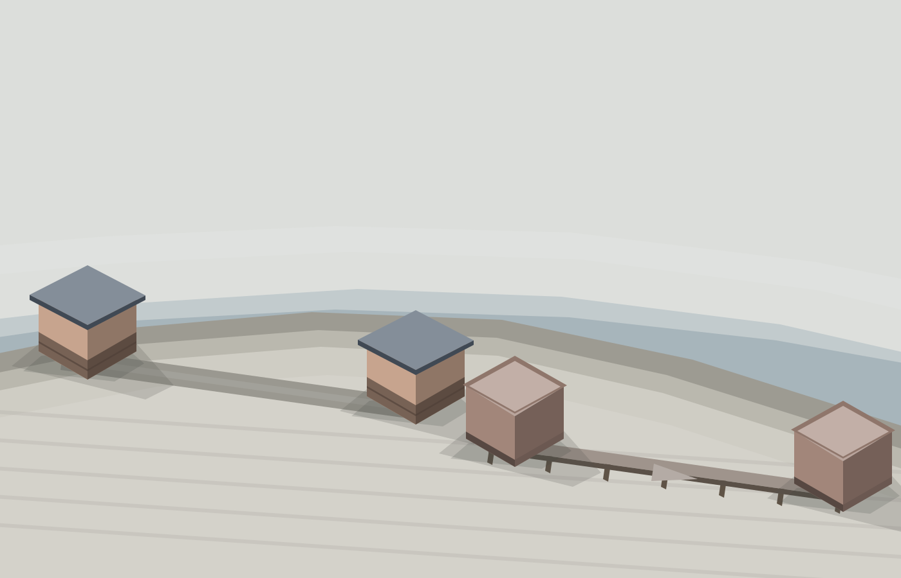
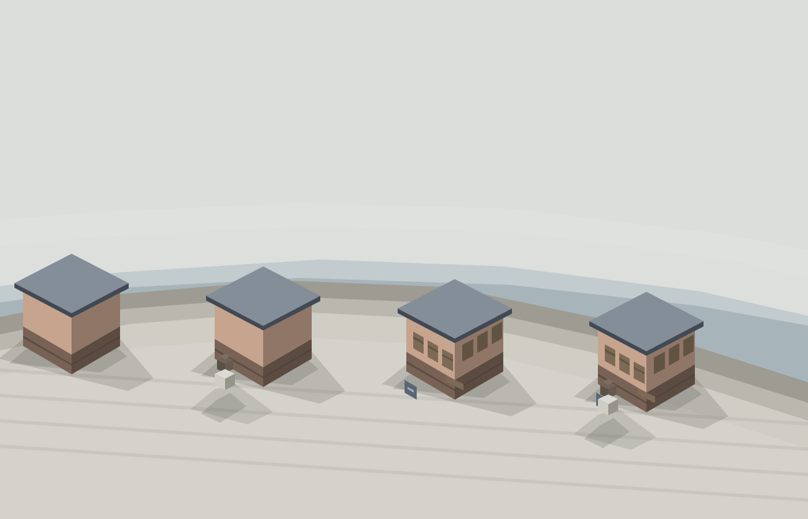

Plague Crisis Reference Plates (era six)
Flat-shaded SVG references over era six's geometric paving: flat grey overcast, links inlaid IN the floor, closure as a barrier stone with countable bands.
01 Wide Master
02 Link In The Floor Against On It

03 Long Link Not Adjacency
04 Link Three States
05 Closure Duration Bands
06 Building Four States
